MUTANT HAPE PRIME | OFFICIAL Mutant Hape Prime (MHP) 是由 HAPE 和 BAYC 持有者创建的 8,888 个独特的 Mutated Hape 的独特集合。 突变HAPE PRIME | 官方 NFT - 常见问题（FAQ） ▶ 什么是突变HAPE PRIME | 官方的？ 突变HAP
Mutant Kong Club (Official) 官方 Mutant Kong 俱乐部收藏。 互操作性是关键。 拥抱阿兹米尔。 Mutant Kong Club（官方）NFT - 常见问题（FAQ） ▶ 什么是 Mutant Kong 俱乐部（官方）？ Mutant Kong Club (Official) 是一个 NFT
Mutant KongZ Lab 3055, Derkein, 一个完整的 5000 Kongz 集合的二进制副本，由与 X 基因交叉的多个辐射突变创建，被插入到以太坊区块链中。为了解开实验背后的谜团，我们创建了一个名为 Mutant Kongz
Mutant Lads 突变小伙子 NFT - 常见问题 (FAQ) ▶ 什么是突变小伙子？ Mutant Lads 是一个 NFT（非同质代币）集合。存储在区块链上的数字艺术品集合。 ▶ 有多少个 Mutant Lads 代币？ 总共有 1,299
Mutant Mingos (Official) 欢迎来到 MUTANT MINGOS MUTANT MINGOS MUTANT MINGOS 的家。在 OpenSea 上。发现这个系列中最好的项目。 MUTANT MINGOS OFFlClAL NFT - 常见问题（FAQ） ▶ 什么是突变的 MINGOS OFFlClAL？ MUTANT MINGOS OFFlClAL 是一个 NFT
Mutant Mingos# Mutant Mingos 是生活在以太坊网络上的 999 个 NFT 的集合。我们将对 MetaVerse 土地进行细分，这将由我们已经运行的 DAO 指导。 我们将很快向我们的持有者赠送 3 个顶级 NFT，以庆
Mutant Mingos^ Mutant Mingos 是生活在以太坊网络上的 999 个 NFT 的集合。我们将对 MetaVerse 土地进行细分，这将由我们已经运行的 DAO 指导。 我们将很快向我们的持有者赠送 3 个顶级 NFT，以庆
Mutant MoonbirdsBatz Mutant MoonbirdsBatz NFT - 常见问题（FAQ） ▶ 什么是 Mutant MoonbirdsBatz？ Mutant MoonbirdsBatz 是一个 NFT（非同质代币）集合。存储在区块链上的数字艺术品集合。 ▶ 有多少
Mutant Musks Mutant Elon Musk 是 4444 个独特生成的 nft 的集合，其灵感来自世界上最有影响力的人。 突变 Elon Musk NFT - 常见问题（FAQ） ▶ 什么是突变伊隆马斯克？ Mutant Elon Musk 是一个 NFT（非
Mutant Okay Bears 由于有毒索拉纳，OkayBears 已经变成了变异的 Okay Bears Mutant Okay Bears NFT - 常见问题（FAQ） ▶ 什么是变种人 Okay Bears？ Mutant Okay Bears 是一个 NFT（不可替代令
Mutant Okay Bearz 突变体 Okay Bearz NFT - 常见问题（FAQ） ▶ 什么是变种人 Okay Bearz？ Mutant Okay Bearz 是一个 NFT（不可替代令牌）集合。存储在区块链上的数字艺术品集合。 ▶ 存在多
Mutant Pastel Club Mutant Pastel Club 是 15,000 只变异猿的集合，是 Undead Pastel Club 项目的延续。该系列的三分之二是通过将 Undead Pastel 饮料制成长生不老药制成的，而其余系列则是铸造而成。 Mutant Pastel Club NFT - 常见问
Mutant Punks NFT Mutant Punks NFT 是 10,000 个独特且随机自动生成的朋克的集合，他们将 Mutant 变成了不同的物种。 Mutant Punks NFT NFT - 常见问题（FAQ） ▶ 什么是 Mutant Punks NFT？ Mutant Punks NFT 是一个 NFT（不
Mutant Shiba Club 变种人芝俱乐部 | MSC NFT 在过去 7 天内售出 160 次。Mutant Shiba Club的总销量| MSC 为 12.55 万美元。1个变异柴俱乐部的均价| MSC NFT 为 78.5 美元。有 4,691 突变芝巴俱
Mutant Shiba Club 变种人芝俱乐部 | MSC NFT - 常见问题（FAQ） ▶ 什么是变种柴俱乐部 | MSC？ 变种人芝俱乐部 | MSC 是一个 NFT（不可替代代币）集合。存储在区块链上的数
Mutant Shiba Club Mutant Shiba Club 是 10,000 个动画 NFT 的集合。每个 NFT 都是独一无二的，并且驻留在以太坊区块链上。您的 Mutant Shiba Club NFT 将成为您的俱乐部会员资格。 变种人芝俱乐部 | MSC NFT - 常见问
Mutant Shiba Club(MSC) 变种人芝俱乐部 | MSC NFT - 常见问题（FAQ） ▶ 什么是变种柴俱乐部 | MSC？ 变种人芝俱乐部 | MSC 是一个 NFT（不可替代代币）集合。存储在区块链上的数
Mutant Smart Beast Circle 在他们的第一个系列Smart Beast售罄后，设计师的一个实验室发生了一起化学事故，当时他们正在准备一项特殊资产以提高 Smart Beast 的效率。不幸的是，
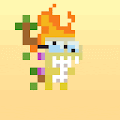 Mutant Tiny Dinos (eth) 突变小恐龙🧪🦖 0xTinyDinos 的突变品种集合 Mutant Tiny Dinos (eth) NFT - 常见问题 (FAQ) ▶ 什么是突变小恐龙（eth）？ Mutant Tiny Dinos (eth) 是一个 NFT (Non-fungible token) 集合。存储在区块链上的数字艺术品集合。
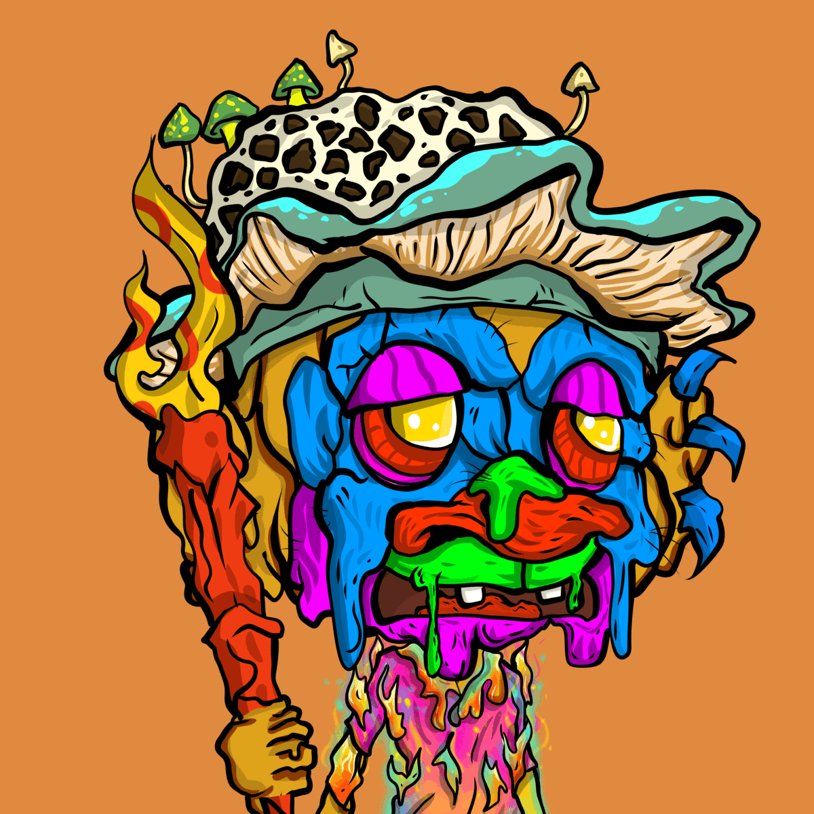 Mutant Trolls by Trolltown Trolltown Mutational Elixirs NFT - 常见问题（FAQ） ▶ 什么是巨魔镇突变药剂？ Trolltown Mutational Elixirs 是一个 NFT（不可替代令牌）集合。存储在区块链上的数字艺术品集合。 ▶ 存在多少 Trolltown 突变
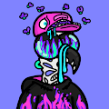 Mutant Turkeys Megaverse 通过玩来赚钱 - 持有我们的 NFT 💎 Turkeys Megaverse 的使命是通过利用艺术、社区和技术来连接世界。Megaverse 是一个数字空间，来自全球的鉴赏家、创作者和收藏
Mutant Zukis Mutant Zukis 是一个实用程序丰富的项目，具有诸如代币化特征、$EXTRACT 代币、每月战利品箱掉落、动态排行榜/稀有工具等功能！ Mutant Zukis NFT - 常见问题（FA
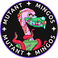 Mutant-Mingos Mutant Mingos 是生活在以太坊网络上的 999 个 NFT 的集合。我们将对 MetaVerse 土地进行细分，这将由我们已经运行的 DAO 指导。 我们将很快向我们的持有者赠送 3 个顶级 NFT，以庆
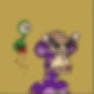 MutantApePixelParty Mutant Ape Pixel Party 在 Polygon 网络上独家收集 2000 个 NFT！每一个都是独一无二的算法生成的，并允许访问将随着时间的推移而显示的仅限会员的福利。 Mutant Ape Pixel Party NFT - 常见问题
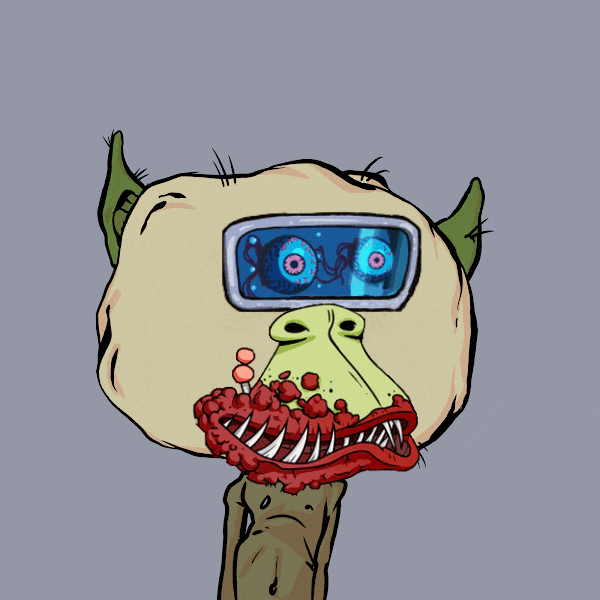 MutantAssGoblins 0.0025 MINT LIVE - 10k 收藏！Da 1 到 Rul3 th3M ALL！Th3结束！！TweeTA Linkk 在 OpenSEE 上！！！ MutantAssGoblins NFT - 常见问题（FAQ） ▶ 什么是 MutantAssGoblins
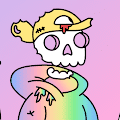 MutantDoodles Official 生活在以太坊区块链上的 8k 个随机生成的 Mutant Doodles 的集合。每个 Mutant Doodle NFT 都代表您在 Doodleverse 社区中的成员身份，您可以在该社区中对项目路线图进行投票，并帮助决定应该
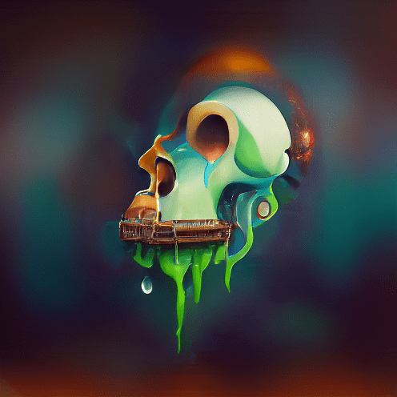 MUTANTFLIP.ART MutantFLIP 是 10,000 个 AI 生成的 MAYC 正在与元宇宙见过的最聪明的头脑一起进化…… MUTANTFLIP.ART NFT - 常见问题（FAQ） ▶ 什么是 MUTANTFLIP.ART？ MUTANTFLIP.ART 是一个 NFT（不
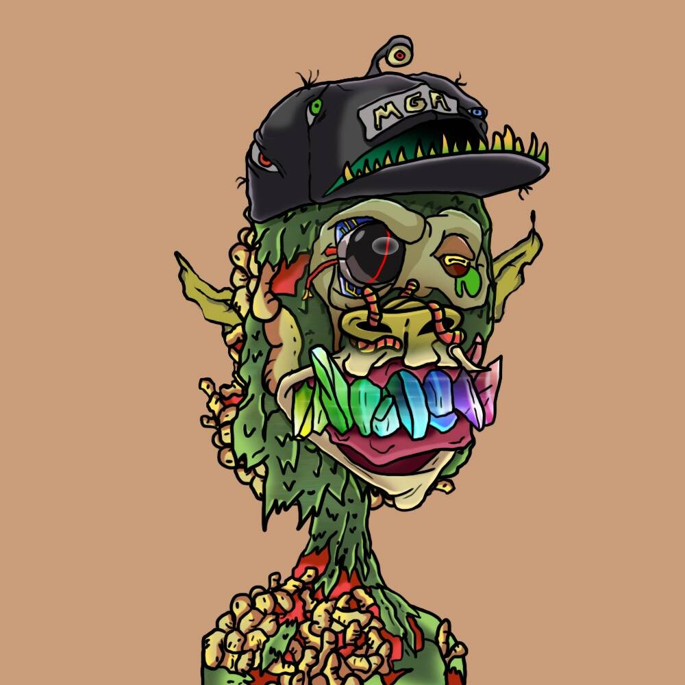 mutantgoblinape 7777 FREAKIIINGGG MUTANT GOBLIN APES 已准备好从 GRAVESSSSSSSS 中走出来，与他们的 zumbiiii 朋友见面！我们不太确定这些疯子能做什么。上帝可能会给他们一些力量…… 变
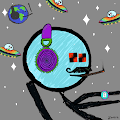 MutantMfers MutantMfers NFT - 常见问题（FAQ） ▶ 什么是突变体？ MutantMfers 是一个 NFT（不可替代代币）集合。存储在区块链上的数字艺术品集合。 ▶ 有多少个 MutantMfers 代币？ 总共有 721 个 MutantMfers N
MutantVerseDNA MutantVerse 是在 N 的前提下构建的。一个由 8 个数字组成的随机序列。很像宇宙。我们正在启动 genesis dNA 作为接口，将使用该接口创建 MutantVerse。 我们使用 N
MutantZuki Official MutantZuki 官方 NFT - 常见问题（FAQ） ▶ 什么是 MutantZuki 官员？ MutantZuki Official 是一个 NFT（Non-fungible token）集合。存储在区块链上的数字艺术品集合。 ▶ MutantZuki
Mutts Official NFT Mutts 是一个友好的社区驱动的 2222 NFT（0.025 ETH 铸币厂）项目，其目标是在整个以太坊区块链上带来友谊。每个 Mutt 将生成 $MUTT 实用代币，以换取 Mutt World 的 IRL / Merch
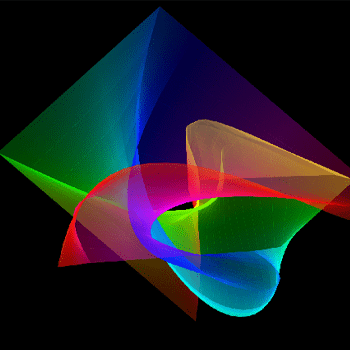 Muturi collection by Kaito Muturi Kaito Muturi 收藏！ 只需铸造 10,000 个 Muturi！前 3,333 个 NFT 将免费，其余 6667 个 @ 0.0055 ETH！连接您的钱包并单击绿色的“薄荷”按钮，然后在它们全部消失之前抓住您的
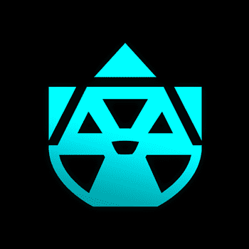 Mutytes Mutytes 是在以太坊区块链中漫游的 1,721 种严重变异生物的集合。完全去中心化，每一个 Mutyte 都是 100% 在链上生成、存储和渲染的。 一旦获得，Mutyte 将授予其所有者
MUZUKI (OFFICIAL) MUZUKI（官方）统计 创建于 4 个月前 2,000 代币供应 7.5% 费用 过去 7 天没有售出 MUZUKI (OFFICIAL)。 Muzuki 是“Kidzuki”系列的 2000 NFT 变异版本。Mu
Muzuki Official Muzuki 官方 NFT - 常见问题（FAQ） ▶ 什么是Muzuki官员？ Muzuki Official 是一个 NFT（Non-fungible token）集合。存储在区块链上的数字艺术品
MXC Genesis MXC - DROP 是 80 位艺术家之间的合作，包括插画家、动作设计师、生成 AI 艺术家、3D 创作者、体素艺术家、涂鸦艺术家和摄影师，MXC - DROP 是共同愿景的表达。
My Banana Fucko 以太坊区块链上的 2,000 张不请自来的香蕉图片和一些讨厌的超市香蕉，由称为 ass pocket 的 ERC-721 合约提供支持。屁股口袋是（理论上）永久的香蕉存储装置，由岛上一些最
MY BEAUTIFUL DARK TWlSTED FANTASY BY BEEBLE BEEBLE BLOCKS 的创世纪系列。该系列是对 BEEBLE 独特风格的视觉美学中的超凡脱俗的城市景观和黑暗幻想的探索，带有迷幻色彩的抽象数字绘画。标题，指的是 Kanye West 的一张旧
My Buddy by Sandra Jockus (Mind Jungle) 每天都会带来许多不同的情绪和感受，无论好坏。这是一个充满明亮多彩的 NFT 的集合，每个都讲述了一个人和动物的故事，包括各种情感的表达和一些有趣的信
Mya Parker 1of1s Mya Parker 的 1/1s Erc-721 代币集合。没有实用程序只是 rad 艺术记录了 15 岁非裔美国人和女性 Mya Parker 或推特上的@myalparker 的经验😊✊🏾。 Mya Parker 1of1s NFT - 常见问题（F
Myas Treasures (Silver Key Club Member) Myas Treasures（Silver Key Squad 成员）是手绘 NFT 收藏品，在 Mya Parker 的 Mya’s Collections 和 rad 艺术作品中具有第二大实用性。该系列将有 38 件商品，每件商品有 10 个版
MYBIAS(SWITH) MYBIAS 是第一个 K-POP 粉丝社区 DAO。在 MYBIAS 中，DAO 成员可以成为有前途的 K-POP 偶像的早期支持者。SWITHs，支持STACY的粉丝，是MYBIAS粉丝DA
MyChibiBots 购买 CHIBIBOT 可让您免费访问即将推出的 MYCHIBIBOTS 游戏 MyChibiBots 是一个不断发展的 2048 个独特 ChibiBots 的集合，由邪恶的 AI 在技术奇点之后的遥远未来通过程序构建。它们可能是机器，但它
Official - LEX NFT by LexMetaCapital LexMetaCapital 的 Lex NFT 是一个生成的 10,000 个独角兽 NFT，在全球范围内充满爱心，以提高对我们管理的 $1B 组织的认识，并支持#freemint 趋势，我们现在更改了合同
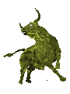 Polygon Bull Fight 项目网站、社交联系方式、项目介绍内容详见：https://opensea.io/collection/bull-for-fight .png) 准备
Polygon L2 Punks 第 2 层朋克都是唯一生成的 10,000 个 CryptoPunk NFT，存储在第 2 层（多边形）区块链上。 你现在可以铸造你的 L2 朋克了！L2 Punks NFT - 常见问题（FAQ） ▶ 什么是L2朋
 是由 HAPE 和 BAYC 持有者创建的 8,888 个独特的 Mutated Hape 的独特集合。")